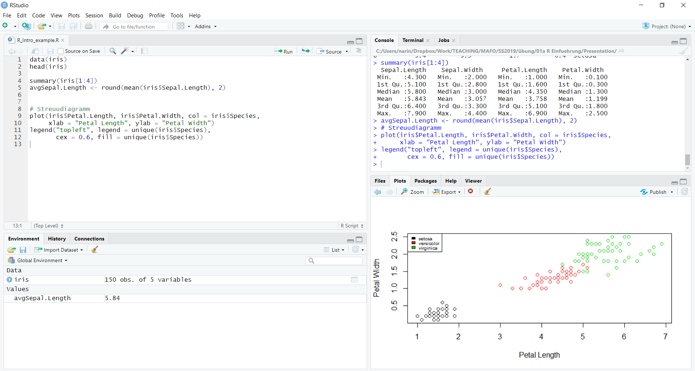
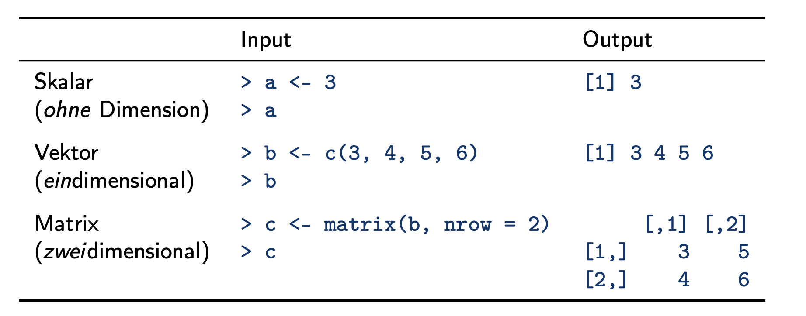

setwd("/Users/MUSTERMANN/Desktop/R") # (Mac)
setwd("C:/Users/MUSTERMANN/Desktop/R") # (Windows)MARKTFORSCHUNG UND MARKETINGENTSCHEIDUNGEN - SoSe 2023
Hinweis zur Nutzung und Weitergabe
Die Datei wird Ihnen zur Nutzung im Rahmen dieser Veranstaltung bereitgestellt. Die Weitergabe der Datei an Dritte sowie deren Veröffentlichung, Vervielfältigung oder sonstige Verbreitung ist nicht gestattet.
Übung 1: R-Einführung
Guten Tag, liebe Studierende. Im Rahmen dieses Kurses werden wir versuchen, mit Hilfe statistischer Methoden und der Programmiersprache R, eine Antwort auf konkrete Marktforschungsfragen zu finden und daraus Marketingentscheidungen abzuleiten. Die erste Übung wird eine Einführung in R sein. Lassen Sie uns jetzt mit der ersten Übung beginnen.
Aufbau
Der Inhalt der Übung ist wie folgt aufgebaut: Am Anfang sollen die Fragen “Was ist R?” und “Wozu ist R nützlich?” geklärt werden. Anschließend werden die Schritte zum Installieren von R sowie RStudio genauer beschrieben. Weiterhin schauen wir uns dann die Benutzeroberfläche von RStudio an. Sobald diese Schritte abgeschloßen sind, werden wir uns bereits im Rahmen dieser ersten Übung auch mit Beispielen in R beschäftigen. Dafür werden wir bestimmte Codes in R eingeben und uns den Output anschauen.
Hausaufgaben
Am Ende dieser Übung sowie am Ende jeder weiteren Übung wird es eine Hausaufgabe geben. Mit dieser Hausaufgabe möchte ich Ihnen die Möglichkeit geben, das Erlernte noch mal zu wiederholen. Die Lösungen für die Hausaufgaben werden online bereit gestellt, allerdings etwas zeitversetzt, damit Sie die Möglichkeit haben, sich auch selbstständig mit den Aufgaben auseinanderzusetzen.
1 Einführung
1.1 Was ist R?
Wikipedia: “R ist eine freie Programmiersprache für statistisches Rechnen und statistische Grafiken. Sie wurde von Statistikern für Anwender mit statistischen Aufgaben entwickelt. […] R gilt zunehmend als die Standardsprache für statistische Problemstellungen sowohl in der Wirtschaft als auch in der Wissenschaft.”
Was können Sie aus dieser Definition mitnehmen?
In R(Studio) befinden wir uns in einer Umgebung, in der statistische Datenverarbeitung durchgeführt werden kann. Das ist insofern relevant, als dass Ihnen heutzutage sowohl in der Wirtschaft als auch in vielen anderen Bereichen zunehmend große Datenmengen zur Verfügung stehen. Im Umgang mit diesen großen Datenmengen ist das Ziel oft, diese zu Nutzen zu machen, indem wir zum Beispiel diese Daten analysieren, auswerten oder visualisieren.
Ein sehr verbreitetes sogenanntes Statistikwerkzeug, das uns befähigt diese Analysen durchzuführen, ist R. R bietet Ihnen eine Vielzahl von Möglichkeiten, wie Sie Ihre Daten organisieren, transformieren, auswerten oder mit Hilfe von Grafiken anschaulich darstellen können.
Das Ziel dieser Marketingveranstaltung ist es, Ihnen nahezubringen, wie man mit verschiedenen statistischen Verfahren auf konkrete Marktforschungsfragen antworten kann - Dabei soll R Ihnen als Werkzeug helfen, um statistische Analysen durchzuführen, Antworten zu finden und dementsprechend geeignete Marketingentscheidungen treffen zu können.
Warum R?
- R ist frei zugänglich: Kostenlose Installation
- R ist Open Source
- Anwendung über den Rahmen dieses Kurses hinaus (z.B. Seminar- und Bachelorarbeiten)
- Hohe Relevanz im akademischen und wirtschaftlichen (Arbeitsmarkt) Bereich
- R ist eine Cross-Plattform: Benutzung ist unabhängig vom Betriebssystem
- R kann von SPSS und SAS angesteuert werden
- R ist weltweit verbreitet und wird von vielen Menschen genutzt, die unabhängig voneinander an R arbeiten und versuchen, es kontinuierlich besser zu machen (durch z.B. die Entwicklung von sogenannten Zusatzfunktion oder
packages: ca. 17.500) - Große Online-Community: Bietet Hilfe bei z.B. Fehlermeldungen, Coding-Problemen und allem, was sonst bei der Nutzung zu Schwierigkeiten führen kann…
Das sind alles gute Gründe für die Nutzung von R. Allerdings gibt es sicherlich noch viele weitere Gründe, weshalb R relevant ist oder weshalb Sie sich mit R auseinandersetzen sollten.
Auf den ersten Eindruck mag der Umgang etwas schwierig, anspruchsvoll oder umständlich erscheinen; Sie werden aber schnell sehen, dass das gar nicht der Fall ist! Alle Codes, die wir hier im Rahmen der Übung durchgehen, werden Ihnen online zur Verfügung gestellt. Das heißt, Sie können anschließend zu Hause diese Codes durchgehen und in Ruhe nachvollziehen.
Daher mein Tipp: Nutzen Sie die Chance, sich im Rahmen dieser Veranstaltung mit R auseinandersetzen zu können und zu erlernen. Wie bereits erwähnt, ist R ein sehr beliebtes Programm, welches Ihnen in Zukunft - sei es für Ihr Studium oder Ihre Karriere - bestimmt einen Mehrwert bieten kann.
2 Erste Schritte
Im Folgenden wird erklärt, wie Sie R sowie die dazugehörige IDE installieren können. Zusätzlich werden die wichtigsten ersten Schritte beim Arbeiten mit R beschrieben.
2.1 R installieren
- Gehen Sie zur Homepage: https://www.r-project.org
- Wählen Sie CRAN auf der linken Seite oder download R
- Wählen Sie einen CRAN Mirror aus (z.B. Germany: University of Münster, Germany)
- Wählen Sie die Version aus, die zu Ihrem Betriebssystem passt (z.B. Windows, MacOs)
- Klicken Sie auf base
- Wählen Sie download 4.2.0 (oder eine entsprechend neuere Version)
- Klicken Sie auf die heruntergeladene Datei (bspw. R-4.2.0-win.exe) und folgen Sie den Anweisungen (Ändern Sie Voreinstellungen nur dann, wenn Sie wissen, was Sie tun!)
- Glückwunsch, Sie haben R installiert!
2.2 RStudio Desktop installieren
Im nächsten Schritt sollen Sie die IDE RStudio herunterladen. IDE ist die Abkürzung für integrated development environment und erleichtert die Bedienung (input und output von Informationen). RStudio stellt Ihnen alles Nötige zum Programmieren mit R in einem übersichtlichen Bildschirm bereit, um das Programmieren einfacher zu gestalten.
Natürlich können Sie R auch unabhängig von RStudio verwenden. Das werden wir im Rahmen dieser Übung allerdings nicht machen.
Fangen Sie an mit:
- Gehen Sie zur Downloadseite: https://www.rstudio.com/products/rstudio/download/#download
- Wählen Sie die freie Version von RStudio Desktop
- Wählen Sie unter “All Installers” die Version aus, die zu Ihrem Betriebssystem passt (z.B. RStudio 1.4.1106 für Windows 10/8/7, oder eine entsprechend neuere Version)
- Klicken Sie auf die heruntergeladene Datei (bspw. RStudio-1.4.1106.exe) und folgen Sie den Anweisungen (Ändern Sie die Voreinstellungen nur dann, wenn Sie wissen, was Sie tun!)
- Glückwunsch, Sie haben RStudio installiert!
2.3 RStudio Oberfläche
Beginnen wir nun mit der Nutzung von RStudio.
Wenn Sie RStudio durch einen “Doppelklick” öffnen, sehen Sie die Benutzeroberfläche. In diesem Fall ist diese in vier verschiedene Bereiche geteilt:

- Oben links - Editor: Hier können Sie die Codes eingeben, bearbeiten, modifizieren, umstrukturieren und schlussendlich als Skript abspeichern.
- Oben rechts - Konsole: In der Konsole müssen die Befehle am Ende eingegeben werden, damit sie auch von R gelesen werden können. Natürlich können die Codes mit einem einfachen Shortcut aus dem Editor in die Konsole überführt werden (Shortcut Mac: command-enter; Windows: control-enter).
- Unten rechts - Plots & Help: Im Plot-Tab werden Ihnen Grafiken angezeigt, die Sie im Skript oder in dr Konsole erstellt haben. Unter Help können bestimmte Befehle und Funktionen “nachgeschlagen” werden, um deren Funktionsweise, Argumente und Bedeutungen aufzufrischen bzw. zu verstehen.
- Unten links - Environment & History: Im Environment erhalten Sie einen Überblick über alle Ihre Objekte, die Sie abgespeichert haben. Unter History können Sie alle bisher in der Konsole ausgeführten Befehle nachlesen.
2.4 Arbeitsverzeichnis
Als nächstes wollen wir das Arbeitsverzeichnis setzen. Das Arbeitsverzeichnis ist der Ordner, in dem R ausgeführt wird. Das ist relevat, da R innerhalb eines “Projekts” stets auf das gesetzte Verzeichnis zu(rück)greift, wenn Sie z.B. Datensätze laden wollen.
Dabei steht WD für das Arbeitsverzeichnis (working directory). Im Arbeitsverzeichnis werden Ihre Dateien abgespeichert und (nur) von dort können Sie ihre Dateien in R laden.
Das WD müssen Sie selbst bestimmen bzw. “setzen”. Dies machen Sie mit dem Befehl setwd(). In diesen Befehl setzen Sie den Pfad des Ordners ein, indem Sie zukünfitg arbeiten möchten.
WD setzen
Welches WD ist gerade gesetzt?
Um herauszufinden, in welchem working directory Sie sich aktuell befinden, führen Sie den Befehl wd() aus.
getwd()[1] "/Users/majamurr/Desktop/KV_Hiwi/Quarto/quarto-project/websiteTest"2.5 Pakete
Im nächsten Schritt wollen wir uns angucken, wie man in R Pakete installiert. R bietet eine Reihe an Zusatzpaketen (~15.000), mit deren Hilfe Sie statistische Analysen besser durchführen können.
Um zum Beispiel das Paket car zu installieren, müssen Sie zuerst den Befehl ìnstall.packages() eingeben (Pakete müssen nur einmal installiert werden).
install.packages("car")Um als nächstes Zugriff auf das zuvor installierte Paket zu haben, müssen Sie das Paket car für die Session laden. Pakete müssen für jede Session neu geladen werden. Dafür beutzen Sie den Befehl library().
library(car)Lade nötiges Paket: carDataNach dem Laden stehen alle Funktionen von car zur Verfügung.
3 Erste Beispiele
Kommen wir nun zu den ersten Beispielen in R.
In R ist es möglich - sowie mit einem ganz normal Taschenrechner auch - die grundlegenden arithmetischen Operatoren und Funktionen durchzuführen. Im Folgenden sehen Sie eine Übersicht von einigen dieser Operationen.
| Operatoren | Beschreibung |
|---|---|
| \(+\) | Addition |
| \(-\) | Subtraktion |
| \(*\) | Multiplikation |
| \(/\) | Divison |
| ^ oder \(**\) | Exponentiation |
3.1 R als Taschenrechner (in der Konsole)
Die Nutzung dieser Operatoren kann veranschaulicht werden, indem Sie folgende Aufgaben in die Konsole eingeben:
(32 + 43) * 2(1.6 / (12 + 4.32)) * 99
Logischerweise herrscht auch in R “Punkt vor Strich”, weshalb z.B. die Addition von 32 und 43 im ersten Beispiel durch Klammern deutlich gemacht werden muss. Allgemeiner: Die Reihenfolge von Berechnungen muss berücksichtigt und kenntlich gemacht werden.
Weiterhin können Sie auch mit Dezimalzahlen arbeiten. Achten Sie darauf, dass Dezimalzahlen in R mit einem Punkt geschrieben werden (englische Schreibweise, z.B. 4.32).
To Do Nr. 1: Berechnen Sie die Differenz zwischen dem Jahr 2023 und dem Jahr, in dem Sie mit dem Studium angefangen haben. Dividieren Sie diesen Wert mit der Differenz zwischen dem Jahr 2023 und Ihrem Geburtsjahr. Multiplizieren Sie das Ergebnis mit 100. Was haben Sie berechnet?
Beispiel:
(2023 - 2018) / (2023 - 2000) * 100
3.2 Workspace/Environment
Eine weitere sehr wichtige Funktion in R ist, dass Sie Zahlen/Variablen/Funktionen/… bestimmte Namen zuweisen können. Das heißt, Sie können Objekte benennen und mit diesen später weiterarbeiten. R merkt sich diese Objekte bzw. speichert diese im Environment ab (siehe 2.3 RStudio Oberfläche).
Dieses Zuweisen von Namen funktioniert mit dem Operator <-. Anstelle dieses Operators können Sie auch = verwenden. Beide Operatoren führen zum selben Ergebnis.
Die genaue Anwendung können Sie anhand des folgenden Beispiels nachvollziehen.
Beispiele:
Erstellen wir eine Variable a mit dem Wert 4 und geben diese anschließend aus. Die definierte Variable a wird nun im Environment mit ihrem dazugehörigen Wert gespeichert.
a <- 4
a [1] 4Achtung: R ist case sensitive. Das bedeutet, dass R zwischen Groß- und Kleinschreibung unterscheidet. Z.B. kennt R “A” nicht, wenn Sie bisher nur “a” definiert haben.
Als nächstes können Sie die Variable nun nutzen, um Operationen durchzuführen. Das heißt, anstelle von 4 * 5 können Sie a * 5 in R berechnen. (Dabei wird das Produkt nicht in a gespeichert.)
a * 5 [1] 20Um die Variable a wieder aus dem Environment/Workspace zu entfernen, kann der Befehl rm() (Abkürzung für remove) benutzt werden.
rm(a)Nach dem Löschen “erkennt” R die Variable a nicht mehr.
Das kann getestet werden durch ein erneutes Aufrufen von a.
aAls Output werden Sie hier eine Fehlermeldung erhalten (Error: object ‘a’ not found), da dieses Objekt sich nicht mehr im Environment befindet und daher nicht mehr verwendet werden kann.
3.3 Skalare, Vektoren und Matrizen
Sie können allerdings nicht nur Zahlen einen Namem geben, sondern auch Vektoren und Matrizen. Beispiele könnten unter anderem sein:
 Diese Beispiele können Sie auch selber einmal ausprobieren:
Skalar
a <- 3
a[1] 3Vektor
Einen Vektor definiert man mit der c()-Funktion. In diese Funktionen schreiben Sie die Zahlen, aus denen R einen Vektor bilden soll. In diesem Fall sind das die Zahlen 3 bis 6.
b <- c(3, 4, 5, 6)
b[1] 3 4 5 6Um die Zahlenfolge nicht jedes mal ausschreiben zu müssen, können Sie auch den Operator : benutzen. Der Doppelpunkt zwischen zwei Zahlen signalisiert, dass R alle ganzen Zahlen berücksichtigen soll, die zwischen 3 und 6 liegen (inklusive 3 & 6).
b <- c(3:6)
b[1] 3 4 5 6Matrix
Um eine Matrix zu definieren, verwenden Sie den Befehl matrix(). Die wichtigsten Argumente für diesen Befehl sind:
data= Daten/Elemente, die Matrix berücksichtigen sollnrow= Zeilenanzahlncol= Spaltenanzahlbyrow= TRUE bildet die Matrix von dem Vektor nach ZeilenFALSEist vorgegeben: bildet die Matrix nach Spalten
In unserem Beispiel soll die Matrix c alle Elemente des Vektors b berücksichtigen. Weiterhin setzen wir die Zeilenanzahl nrow = 2. Um anstelle der Zeilenanzahl die Spaltenanzahl zu definieren, müssen Sie nur das Argument nrow mit ncol austauschen.
c <- matrix(b, nrow = 2)
c [,1] [,2]
[1,] 3 5
[2,] 4 6Ein weiteres Argument des Matrixbefehls ist byrow. Ist dieser Befehl auf TRUE gesetzt, bildet R die Matrix nach Zeilen, andernfalls nach Spalten. Die default-Einstellung ist byrow = FALSE. Das bedeutet, sollten Sie dieses Argument weglassen, wird Ihre Matrix nach Spalten gebildet.
Um die Matrix nach Zeilen zu bilden, müssen Sie dieses aktiv im Befehl angeben.
matrix(b, nrow = 2, byrow = TRUE) [,1] [,2]
[1,] 3 4
[2,] 5 63.4 Funktionen
Weiterhin können Sie in R auf Funktionen zurückgreifen, die Ihnen die Arbeit sehr erleichtern. Funktionen in R sind festgelegte Abläufe von Handlungen und besitzen Funktionsargumente in Klammern.
Zum Beispiel können wir uns überlegen, wie wir den Mittelwert von dem Vektor b ermitteln wollen.
Diesen können wir zum einen “per Hand” ausrechnen, indem wir alle Elemente addieren und anschließend durch die Anzahl der Einträge dividieren.
(3 + 4 + 5 + 6) / 4[1] 4.5Zum anderen können wir auch Funktionen anwenden, die uns einen Teil der Arbeit abnehmen und die Berechnung schneller machen.
Um die Berechnungen im Zählers zu vereinfachen, können Sie die Funktion sum() benutzen. Diese summiert alle Zahlenelemente innerhalb eines Vektors auf.
Um die Berechungen im Nenner zu vereinfachen, können Sie die Funktion length() benutzen. Diese gibt einem die Länge des Vektors aus, sprich die Anzahl der Einträge in einem Vektor.
sum(b) / 4[1] 4.5sum(b) / length(b)[1] 4.5Allerdings geht es noch einfacher! In R gibt es die Funktion mean(), welche Ihnen direkt den Mittelwert eines Vektors ausgeben kann.
mean(b)[1] 4.5Sie können sehen, alle Versionen haben den gleichen Output.
To Do Nr. 2: Berechnen Sie die Summe und den Mittelwert der Zahlen 1 bis 10.
d <- c(1:10) # Vektor mit Zahlen 1 bis 10 definierensum(d) # die Summe berechnen[1] 55mean(d)[1] 5.5Weitere Funktionen
Natürlich gibt es noch viele weitere Funktionen, die Sie z.T. im Laufe dieser Veranstaltung noch kennenlernen werden.
Eine davon ist die rnorm()-Funktion zur Erzeugung von normalverteilten Zufallszahlen (vorallem in der Markforschung sehr hilfreich!).
Schauen wir uns ein Beispiel an.
rnorm(5) # erzeugt genau 5 Zufallszahlen aus der Standardnormalverteilung[1] -0.62463646 0.05253865 -0.21859563 -2.43675358 0.08997210Sie können sehen, der Befehl führt dazu, dass genau fünf zufällige Zahlen aus der Standardnormalverteilung gezogen werden. Das heißt, solange Sie keine Parameter zur Ziehung der Zufallszahlen festlegen, ist die defaukt-Einstellung der Normalverteilung die Standardnormalverteilung. Diese hat einen Mittelwert = 0 und eine Standardabweichung = 1.
Natürlich können Sie diese Parameter als Argumente in der Funktion anpassen. Dazu können Sie folgende Argumente beeinflussen:
n= Anzahl der Zufallszahlen, die gezogen werden sollenmean= Mittelwert definierensd= Standardabweichung definieren
In dem nachstehenden Beispiel sollen 5 Zufallszahlen gezogen werden, wobei die Verteilung aus der diese Zahlen gezogen werden einen Mittelwert von 2 und eine Standardabweichung von 3 haben soll.
rnorm(n = 5, mean = 2, sd = 3)[1] 2.4946372 5.1364005 -0.4380834 1.2517139 6.2062314Achtung: Jede Ziehung erzeugt ein neues Set von Zufallszahlen!
3.5 Plots
Um das Kapitel “Erste Beispiele” abzuschließen, schauen wir uns noch kurz Plots bzw. Grafiken an. Vertieft wird das Erstellen und die Nutzung von Plots in einer nachfolgenden Übung zum Thema “Deskriptive Datenanalyse”.
Als Grundlage des heutigen Plots definieren Sie zunächst zwei Vektoren mit jeweils 100 Zufallszahlen aus der Standardnormalverteilung. Dafür sollen Sie wieder die Funktion rnorm() verwenden.
x1 <- rnorm(100)
x2 <- rnorm(100)Diese beiden Vektoren sollen nun in einem Streudiagramm dargestellt werden. Dafür kann die plot()-Funktion verwendet werden.
plot(x1) # Streudiagramm: Werte von x1 gegen Reihenfolge (Index)
Dabei können die Vektoren einzeln, aber auch zusammen bzw. “gegeneinander” geplottet werden.
plot(x1, x2) # Streudiagramm: Werte von x1 gegen x2
Außerdem können die Verteilungen der einzelnen Vektoren mit Hilfe eines Histograms dargestellt werden. Dafür verwenden Sie die Funktion hist().
hist(x1) # Histogramm: Verteilung von x1
To Do Nr. 3: Wiederholen Sie das Ganze mit 10000 Zufallszahlen.
x1 <- rnorm(10000)
x2 <- rnorm(10000)
plot(x1) 
plot(x1, x2)
hist(x1)
4 Hilfe und Dokumentation
Wie anfangs erwähnt, können Sie die help()-Funktion oder das help-Fenster benutzen, um sich Dokumentationen oder Beschreibungen für bestimmte Funktionen ausgeben zu lassen. Dieses Tool wollen wir uns nun genauer anschauen.
Möglicherweise wollen Sie mehr über die mean()-Funktion von zuvor lernen. In diesem Fall können Sie folgenden Befehl eingeben:
help(mean) Daraufhin erscheint im help-Fenster die genaue Dokumentation. In dieser Dokumentation wird erklärt, was diese Funktion macht, welche Argumente sie besitzt, was diese Argumente bedeuten, wie sie anzuwenden sind sowie deren default-Einstellungen. Gegen Ende werden noch Beispiele gezeigt.
Eine Alternative zur help()-Funktion bietet das ?.
?meanUm typische Anwendungsbeispiele von der mean()-Funktion zu sehen, können Sie folgenden Befehl benutzen:
example(mean)
mean> x <- c(0:10, 50)
mean> xm <- mean(x)
mean> c(xm, mean(x, trim = 0.10))
[1] 8.75 5.50Gerade am Anfang kann es sehr hilfreich sein, sich einen generellen Überblick über R zu verschaffen. Dies können Sie machen, indem sie help.start() eingeben.
help.start()starte den http Server für die Hilfe fertigWenn der Browser '/usr/bin/open' bereits ausgeführt wird, wird er nicht
neu gestartet, sondern Sie müssen in sein Fenster wechseln
Ansonsten: Geduld ...To Do Nr. 4: Schauen Sie sich die Hilfe und Anwendungsbeispiele für andere Funtktionen an, z.B. sum().
help(sum)
example(sum)
sum> ## Pass a vector to sum, and it will add the elements together.
sum> sum(1:5)
[1] 15
sum> ## Pass several numbers to sum, and it also adds the elements.
sum> sum(1, 2, 3, 4, 5)
[1] 15
sum> ## In fact, you can pass vectors into several arguments, and everything gets added.
sum> sum(1:2, 3:5)
[1] 15
sum> ## If there are missing values, the sum is unknown, i.e., also missing, ....
sum> sum(1:5, NA)
[1] NA
sum> ## ... unless we exclude missing values explicitly:
sum> sum(1:5, NA, na.rm = TRUE)
[1] 155 R-Skripte
R-Skripte sind Dokumente, die Sie im Editor erstellen, bearbeiten und verwenden können. Skripte ermöglichen es Ihnen, ihre Codes zu speichern, um zu einem späteren Zeitpunkt weiter daran arbeiten zu können.
Weiterhin können Sie Kommentare in Ihr Skript mit einbauen. Dafür verwenden sie die #. Texte hinter Rauten werden auskommentiert.
Um Befehle oder auch Gruppen von Befehlen ausführen zu lassen, markieren Sie die entsprechenden Zeilen im Skript und drücken Sie “command + enter” für Mac bzw. “control + enter” für Windows.
6 Datenstrukturen
Im Folgenden wollen wir uns die grundlegenden Datenstrukturen in R anschauen. Dabei können wir u.a. vier Strukturen voneinander unterscheiden:
- Vektoren: eindimensionale Datenstruktur, haben wir bereits kennengelernt
- Matrizen: zweidimensionale Datenstruktur
- Data Frames: zweidimensionale Datenstruktur, die im Gegensatz zu Matrizen aber verschiedene Skalenniveaus beinhalten kann; Ideal für ganze Datensätze
- Listen: dimensionslose Datenstruktur, die beliebige andere Strukturen beinhalten kann (eine Art Sammelbecken
Eine hilfreiche Funktion zum Herausfinden der jeweiligen Datenstruktur ist str() (Abkürzung für structure). Um zu verdeutlichen, was diese Funktion genau macht, schauen wir uns ein Beispiel an. Dafür definieren wir zuerst einen Vektor mit 100 standardnormalverteilten Zufallszahlen. Diesen setzen wir anschließend in die Funktion ein.
x <- rnorm(100)
str(x) num [1:100] 0.707 -0.235 0.613 -1.803 0.124 ...Im Output können Sie sehen, dass dieser Vektor eine numerische Struktur hat (num für numeric). Das bedeutet, dass es in diesem Vektor ausschließlich Zahlenobjekte abgespeichert werden.
Im weiteren Verlauf dieser Übung werden wir uns noch weitere Datenstrukturen anschauen.
Achtung: Matrizen können nur numerische Strukur besitzen!
6.1 Vektoren
Beginnen wir mit den Vektoren.
Definieren Sie zunächst einen Vektor mit den fünf Zahlen: 1,4,6,8,10.
vec1 <- c(1, 4, 6, 8, 10)
vec1[1] 1 4 6 8 10Um ein bestimmtes Element des Vektors ausgeben zu lassen, müssen Sie die Position des Elements in eckigen Klammern angeben. In diesem Fall wollen wir uns das fünfte Element - Zahl = 10 - ausgeben lassen. Da wir wissen, dass die 10 an fünfter Position steht, können wir mit Hilfe der eckigen Klammern direkt auf dieses Element zugreifen.
vec1[5] [1] 10Wollen wir allerdings Elemente in einem Vektor nachträglich verändern, müssen zwei Schritte beachtet werden:
- Schritt: Welche Position soll nachträglich verändert werden?
- Schritt: Wie soll dieses Element verändert werden?
Um ein Element mit einem neuen Wert zu überschreiben, müssen Sie zuerst die Position im Vektor mit eckigen Klammern spezifieren. Anschließend weisen wir diesem Element einen neuen Wert zu.
Hier soll das dritte Element (Zahl = 6) durch die Zahl 12 ersetzt werden.
vec1[3] <- 12
vec1[1] 1 4 12 8 10Ebenfalls ist es möglich, einen Vektor mit Hilfe der seq()-Funktion zu erstellen. Dabei wird eine Sequenz definiert, z.B. von 0 bis 1 in 0.25er Schritten:
vec2 <- seq(from = 0, to = 1, by = 0.25)
vec2 [1] 0.00 0.25 0.50 0.75 1.00Abschließend ist anzumerken, dass Vektoren auch elementweise addiert werden können:
vec1 + vec2 [1] 1.00 4.25 12.50 8.75 11.006.2 Matrizen
Kommen wir nun zu den Matrizen - den zweidimensionalen Datenstrukturen.
Sie wissen, dass eine Matrix mit Hilfe der matrix()-Funktion definiert werden kann. Dafür brauchen Sie einen Vektor als “data”-input. In diesem Fall ist das ein Vektor mit den sechs Zahlen: 9, 2, 3, 4, 5, 6. Weiterhin müssen Sie angeben, aus wie vielen Zeilen bzw. Spalten die Matrix bestehen soll.
mat <- matrix(c(9, 2, 3, 4, 5, 6), ncol = 3, nrow = 2)
mat [,1] [,2] [,3]
[1,] 9 3 5
[2,] 2 4 6Um uns die erste Zeile der Matrix ausgeben zu lassen, müssen wir die Position der ersten Zeile in eckigen Klammern hinter das Objekt schreiben.
Da es sich bei einer Matrix um eine zweidimensionale Datenstruktur handelt, müssen wir klar definieren, welche Dimensionen ausgegeben werden sollen. Dies geschieht indem wir Kommas in den eckigen Klammern setzen Dabei steht die Zahl vor dem Komma für Zeilen und die Zahl nach dem Komma für Spalten. Sollen für eine Zeile alle Spalten angezeigt werden (oder vice versa), kann die entsprechende Stelle in den eckigen Klammern einfach frei gelassen werden.
mat[1, ] # Erste Zeile[1] 9 3 5mat[, 2] # Zweite Spalte[1] 3 4Sind wir allerdings an einer bestimmten Position in der Matrix interessiert, können wir dies ebenfalls spezifizieren. Dafür müssen wir die genauen Stellen in die eckigen Klammern schreiben. Für unser Beispiel suchen wir das Element in Zeile 2 und Spalte 3.
mat[2, 3] # Element in Zeile 2 und Spalte 3 ausgeben[1] 6Funktionen & Matrizen
Viele Funktionen lassen sich (auch) direkt auf Matrizen anwenden. Zum Beispiel können die sum() und mean()-Funktionen direkt angewendet werden.
sum(mat)[1] 29Dabei bildet sum() die Summe aller Elemente in der Matrix während mean() den Mittelwert aller Einträge berechnet.
mean(mat)[1] 4.833333To Do Nr. 5: Erstellen Sie eine 3x3 Einheitsmatrix (d.h., die Matrix soll drei Zeilen und drei Spalten besitzen. Die Elemente bestehen in der Diagonalen aus Einsen, die Nebenelemente sind Nullen).
matrix(c(1, 0, 0,
0, 1, 0,
0, 0, 1), nrow = 3, ncol = 3) [,1] [,2] [,3]
[1,] 1 0 0
[2,] 0 1 0
[3,] 0 0 1# oder
diag(1, nrow = 3, ncol = 3) [,1] [,2] [,3]
[1,] 1 0 0
[2,] 0 1 0
[3,] 0 0 16.3 Data frames
Im nächsten Schritt wollen wir uns Data frames angucken. Wie bereits erwähnt, handelt es sich dabei auch um zweidimensionale Datenstrukturen. Der Unterschied zur Matrix ist der, dass Data frames aus Vektoren mit unterschiedlichen Strukturen bestehen können.
Schauen wir uns dazu ein Beispiel an:
Mit der data.frame() Funktion erstellen wir den Data frame df, der aus drei Vektoren bestehen soll - “id”, “x” und “y”.
- “id” besteht aus zwei Namen (nicht zwei Zahlenwerten!! Wichtig: Namen/Text müssen in Anführungszeichen gesetzt werden.)
- “x” & “y” bestehen aus Vektoren mit Zahlenwerten
df <- data.frame(id = c("id1", "id2"), x = c(11, 14), y = c(19, 21))
df id x y
1 id1 11 19
2 id2 14 21Wollen Sie allerdings nur einen Vektor des Daten frames ausgeben lassen, gibt es verschiedene Möglichkeiten dies zu tun.
Die erste Variante ist der $-Operator. Dieser ist nützlich, falls Sie den Namen des Vektors, den wir uns ausgeben lassen wollen, wissen.
df$y # als Vektor[1] 19 21Weiterhin können Sie sich den Vektor auch mit den eckigen Klammern ausgeben lassen - so, wie wir das bereits gelernt haben. Dafür schreiben Sie die Position des Vektors in eckigen Klammern hinter den Namen des Data frames. Da wir in unserem Fall den kompletten “y”-Vektor ausgeben lassen wollen, lassen wir die Stelle vor dem Komma (Position der Zeilen) frei und definieren nur die Position der Spalte.
df[, 3] # als Vektor[1] 19 21Eine weitere Möglichkeit ist es, doppelte eckige Klammern zu benutzen und in Anführungszeichen den Namen des Vektors anzugeben. Dies würden Sie machen, wenn Sie als Output einen Vektor erzeugen wollen.
Wollen Sie stattdessen einen Data frame als Output generieren, benutzen Sie nur eine eckige Klammer mit dem Namen des Vektors in Anführungszeichen.
df[["y"]] # als Vektor[1] 19 21df["y"] # als Data frame y
1 19
2 21Um bestimmte Zeilen des Data frames ausgegeben zu bekommen, benutzen wir ebenfalls die eckigen Klammern. In unserem Beispiel soll die komplette zweite Zeile ausgegeben werden, weshalb die Stelle nach dem Komma frei bleibt.
df[2, ] id x y
2 id2 14 21To Do Nr. 6: Versuchen Sie, einen Data frame mit dem Inhalt der Tabelle aus der Uebungsfolie 26 zu bauen. Der Data frame soll aus den drei Vektoren “Konsument”, “Geschlecht” und “Alter” bestehen und jeweils fünf Einträge haben.
- Konsument: 1, 2, 3, 4, 5
- Geschlecht: “weiblich”, “weiblich”, “maennlich”, “weiblich”, “männlich”
- Alter: 26, 34, 28, 35, 30
df2 <- data.frame(Konsument = c(1:5),
Geschlecht = c("weiblich", "weiblich", "maennlich",
"weiblich", "maennlich"),
Alter = c(26, 34, 28, 35, 30))
df2 Konsument Geschlecht Alter
1 1 weiblich 26
2 2 weiblich 34
3 3 maennlich 28
4 4 weiblich 35
5 5 maennlich 30Achtung: Die Vektoren in Data frames müssen immer die selbe Länge haben, das heißt, Vektoren in einem Data frame müssen immer die selbe Anzahl an Einträgen besitzen!
6.4 Listen
Kommen wir nun zu Listen in R. Listen haben im Vergleich zu Data frames den Vorteil, dass die Vektoren nicht die selbe Länge haben müssen.
Listen sind eine heterogene Ansammlung von Daten. Das bedeutet, dass Objekte von Listen beliebige und unterschieldiche Datentypen sein können.
Listen können mit Hilfe des Befehls list() erzeugt werden. In unserem Beispiel besteht die Liste aus drei Vektoren mit jeweils unterschiedlicher Länge. Der erste Vektor besteht nur aus einem Element während der dritte Vektor aus fünf Elementen besteht.
#Liste mit drei Eintraegen:
li <- list(v1 = 1,
v2 = c(1, 2),
v3 = seq(0, 1, length = 5))Wenn ein bestimmter Vektor aus der Liste ausgegeben werden soll, kann dafür (wie bei einem Data frame) der $-Operator benutzt werden. Alternativ können auch wieder die eckigen Klammern benutzt werden - mit dem Namen des Vektors in Anführungszeichen.
li$v1 # nur 'v1' ausgeben (hier eine einzelne Zahl)[1] 1li[["v1"]] # alternativ[1] 1li$v2 # nur 'v2' ausgeben (hier zwei Zahlen)[1] 1 2li[["v2"]] [1] 1 2li$v3 # nur 'v3' ausgeben (hier fuenf Zahlen)[1] 0.00 0.25 0.50 0.75 1.00li[["v3"]][1] 0.00 0.25 0.50 0.75 1.00Weiterhin können Elemente eines bestimmten Vektors manipuliert werden. Zum Beispiel können alle Elemente des dritten Vektors “v3” mit der Zahl 10 addiert werden. Dafür können wir ebenfalls Gebrauch vom $-Operator machen, indem wir:
- Mit dem Operator auf den entsprechenden Vektor zugreifen und
- angeben, was gerechnet werden soll.
li$v3 + 10[1] 10.00 10.25 10.50 10.75 11.007 Daten laden und speichern
Kommen wir nun zu einem anderen Thema: Wie werden Daten in R geladen und gespeichert?
Dabei kann R mit einer Vielzahl an Dateiformaten umgehen, wie z.B. ‘.csv’, ‘.pdf’, ‘.xlsl’, ‘.Rdata’ u.v.m.
Wir werden uns im Rahmen dieser Übung mit den Formaten ‘.Rdata’ und ‘.csv’ auseinandersetzen.
Laden Sie bitte für den folgenden Verlauf der Übung die zwei Datensätze ‘age1.Rdata’ und ‘age2.csv’ aus Moodle herunter.
Diese Dateien müssen in dem Ordner gespeichert werden, in dem Sie ihr Arbeitsverzeichnis / working directory gesetzt haben.
Wie können wir nun also diese beiden Dateien in R hochladen?
Für die ‘.Rdata’-Datei können wir ganz einfach die load() Funktion benutzen. Beim Hochladen von Dateien müssen Sie den Namen der Datei (inklusive Datenformat!!) immer in Anführungszeichen setzen.
load("age1.Rdata")
age1Für die ‘.csv’-Datei muss die read.csv() benutzt werden.
age2 <- read.csv("age2.csv")
age2Im nächsten Schritt wollen wir klären: Wie können wir diese beiden Dateien jetzt auf dem Computer speichern?
Für die ‘.Rdata’-Datei benutzen wir die Funktion save() und für die ‘.csv’-Datei die Funktion write.csv(). Beachten Sie bitte, dass in beiden Funktionen der Name, unter dem sie die Datei abspeichern wollen, definiert werden muss - allerdings ohne Anführungszeichen! An zweiter Stelle definieren Sie dann, welche Datei aus ihrem Environment abgespeichert werden soll - diesmal wieder mit Anführungszeichen!
save(age1, file = "age1.Rdata") # in R DatenformatAls zusätzliches Argument können Sie für die ‘.csv’-Datei bestimmen, ob die Zeilennamen mit übernommen werden sollen. Falls nicht, setzen Sie das Argument row.names = FALSE.
write.csv(age2, file = "age2.csv", # in csv Datenformat
row.names = FALSE) # ohne Zeilennamen8 NAs
Als nächstes beschäftigen wir uns noch mit dem Umgang von fehlenden Werten in R. Manchmal kann es vor allem bei reelen Datensätzen passieren, dass bestimmte Datenelemente nicht vorhanden sind. Diese werden Ihnen dann als NA (not available) angezeigt.
Das führt dann zu einem Problem!
Mit fehlenden Werten können Sie bestimmte Funktionen in R nicht mehr durchführen (z.B. mean()).
Schauen wir uns das mit Hilfe eines Beispiels genauer an.
Wir haben einen Vektor “x” mit der uns bekannten c()-Funktion definiert, allerdings fehlt das Element an dritter Stelle -> NA. Wollen wir nun den Mittelwert berechnen, wird uns als Output NA angegeben, da R nicht in der Lage ist, die mean()-Funktion auszuführen, wenn Werte nicht vorhanden sind.
x <- c(1, 3, NA, 5)
mean(x)[1] NAUm dieses Problem zu umgehen, können Sie ein zusätzliches Argument in die mean()-Funktion eingeben: na.rm = TRUE. Wobei “rm” für remove steht. Setzen Sie dieses Argument auf TRUE, werden alle Elemente aus dem Vektor entfernt, für die keine Informationen vorhanden sind
In unserem Beispiel wird dementsprechend ein Element entfernt/ignoriert. Die mean()-Funktion berechnet mit dem Befehl mean(x, na.rm = TRUE) den Mittelwert aus den Zahlen 1, 3 und 5.
mean(x, na.rm = TRUE)[1] 39 Klassen
Kommen wir nun zu unserem vorletzen Thema für diese Übung: Klassen. Klassen haben wir schon kurz im Zusammenhang mit den Datenstrukturen angeschnitten.
Um herauszufinden, welche Datenstruktur ein bestimmter Vektor hat, benutzen wir die str()-Funktion. Diese ist auf jeden Datentyp anwendbar.
Schauen wir uns verschiedene Beispiele mit verschiedenen Vektoren an:
Als erstes haben wir den Vektor “n”, welcher aus den Zahlen 1.3, 0.4, und 0.0001 besteht. Wenden wir nun str(n) an, wird R uns ausgeben, dass es sich bei diesem Vektor um einen numerischen Vektor handelt (num = numerisch).
n <- c(1.3, 0.4, 0.0001)
str(n) num [1:3] 1.3 0.4 0.0001Um einen Vektor mit ganzen Zahlen zu erstellen, können wir diese Zahlen/Einträge mit einem großen L versehen. Dieses L stellt sicher, dass keine Nachkommastellen existieren.
Fragen wir R nun nach der Struktur dieses Vektors, bekommen wir als Output int (integer). Integer bezieht sich immer auf Zahlen ohne Nachkommastellen.
i <- c(3L, 1L, 4L)
str(i) int [1:3] 3 1 4Weiterhin können wir auch einen Vektor aus Namen bzw. Zeichen bilden. Dabei handelt es sich um einen character (chr) Vektor.
ch <- c("Hans", "Frank", "Julia", "Hans")
str(ch) chr [1:4] "Hans" "Frank" "Julia" "Hans"Dieser character-Vektor kann in einen factor-Vektor umgewandelt werden. Dafür benutzen wir die Funktion factor(). Zwischen die Klammern schreiben wir den Namen des Vektors, den wir umwandeln wollen.
Der Unterschied zum character-Vektor besteht darin, dass gleiche Einträge in einem factor-Vektor als die selbe Ausprägung gesehen wird. So werden die beiden Einträge “Hans” im character-Vektor als eigenständige Einträge betrachtet, während diese im character-Vektor als die selbe Einheit (das selbe Level) interpretiert werden.
Ein Faktor hat so viele Level, wie es unterschiedliche Zeichenketten gibt. In unserem Beispiel sind das drei Level.
f <- factor(ch)
str(f) Factor w/ 3 levels "Frank","Hans",..: 2 1 3 2Als letztes schauen wir uns noch den logical (logi)-Vektor an. Dabei gibt es zwei Ausprägungen: TRUE und FALSE.
Hier können wir R die Frage stellen, ob der Vektor “ch” gleich dem Element “Frank” ist. Dabei prüft R für jedes Element in dem Vektor, ob diese Bedingung erfüllt wird. In dem Vektor “log” wird daraufhin TRUE abgespeichert, wenn dies für das entsprechende Element wahr ist und FALSE, wenn dies nicht der Fall ist.
log <- ch == "Frank"
log[1] FALSE TRUE FALSE FALSE10 R-Programmierung
Das letzte Thema dieser Übung ist ein sehr wichtiges Thema - die R-Programmierung. Durch die R-Programmierung können Sie unter anderem if-Bedingungen, for-Loops oder auch eigene Funktionen erstellen. Und wie das geht, schauen wir uns im Folgenden genauer an!
### 10.1 if-Bedingung
Als erstes beschäftigen wir uns mit den if-Bedingungen.
Bei einer if-Bedingung werden bestimmte Befehle in Abhaengigkeit von dem Status einer wahr/falsch-Aussage ausgeführt.
Schauen wir uns ein Beispiel an:
Unser Ziel ist es, eine Funktion zu generieren, die testet, ob ein bestimmter Wert kleiner als 5 ist.
Dafür definieren wir zuerst die Variable ‘w’, welche den Wert 3 speichern soll.
w <- 3
w[1] 3Anschließend können wir unsere Funktion erstellen. Dabei machen wir die Funktion davon abhängig, ob “w kleiner ist als 5”.
- Stimmt diese Aussage, dann soll “w” die Zahl 2 zugeordnet werden.
- Stimmt diese Aussage nicht, dann soll “w” die Zahl 10 zugeordnet werden.
Da wir wissen, dass “w” kleiner ist als 5, sollte bei dieser Funktion “w = 5” herausgegeben werden (Das impliziert, dass die Aussage wahr ist.).
if(w < 5) { # Bedingung pruefen: Wenn ...
d <- 2 # Dann ...
} else {
d <- 10 # Sonst ...
} # Ende
d[1] 2Natürlich funktioniert das auch mit einem Vektor. Diesmal greifen wir dazu auf eine existierende Funktion in R zurück - die ifelse()-Funktion.
Die ifelse()-Funktion braucht als erstes Argument die Bedingung, als zweites Argument die Zahl/den Wert, die angenommen werden soll, falls die Bedingung stimmt und als drittes Argument die Zahl, die angenommen werden soll, falls die Bedingung nicht erfüllt wird.
w <- c(3, 5, 8)
d <- ifelse(w < 5, 2, 10)
d[1] 2 10 10To Do Nr. 7: Erstellen Sie für den Data frame ‘age2’ eine neue nominale Variable “unter25”, welche zeigt ob der Konsument unter 25 Jahre alt ist oder nicht.
age2$unter25 <- ifelse(age2$Alter < 25, "Ja", "Nein")
age210.2 for-Schleife
Außerdem können wir uns in R noch die for-Schleifen anschauen. Bei einer for-Schleife werden bestimmte Befehle mehrfach gemäß einer Bedingung ausgeführt.
Schauen wir uns auch hier ein Beispiel an.
Dafür definieren wir zunächst die Variable ‘x’, die den Wert 1 speichern soll. Für die for-Schleife müssen dann folgende Schritte beachtet werden:
- Wir müssen eine Variable/Namen bestimmen, den wir benutzen wollen, um durch die Schleife durch zu iterieren. Dabei ist es egal, wie dieser Faktor benannt wird, in unserem Fall ist dies ‘i’.
- Es muss festgelegt werden, wie oft, durch die Schleife iteriert werden soll. Bei uns wird die Schleife zehnmal wiederholt. Dabei nimmt ‘i’ die Werte 1 bis 10 an.
- In geschweiften Klammern muss definiert werden, was welche Funktion die Schleife erfüllen muss.
Was in unserer for-Schleife passiert: ‘i’ wird von 1 bis 10 hochgezählt und jeweils von ‘x’ abgezogen. In jedem Schritt wird ‘x’ aus der vorherigen Runde überschrieben. Dabei sollten wir zu einem Output von -54 gelangen.
x <- 1
for (i in 1:10) {
x <- x - i
}
x [1] -5410.3 Eigene Funktionen
Zum Schluss wollen wir uns noch kurz das Erstellen von eigenen Funktionen anschauen. In R ist es nicht nur möglich, Gebrauch von den unzähligen “fertigen” Funktionen zu machen, sondern wir können auch selber eine auf unser Problem zugeschnitte Funktion definieren und verwenden.
In unserem Beispiel wollen wir eine Funktion erstellen, die die mittlere absolute Abweichung (MAD) für uns berechnet. Die Funktion ist wie folgt definiert: \[ MAD = \frac{1}{n} \sum_{i = 0}^{n}{(|x_i - y_i|)}\] In Worten: Wir berechnen die absolute Differenz zwischen zwei Variablen ‘x’ und ‘y’ für jeden ihrer Einträge aus und summieren diese aus. Anschließend dividieren die Summe durch die Anzahl der Einträge ‘n’.
In R: Um die MAD-Funktion zu erstellen benutzen wir den Befehl function(). Dafür schreiben wir in die runden Klammern die Namen der Variablen, die diese Funktion haben soll.
Daraufhin werden geschweifte Klammern geöfnnet, in welchen nun die Befehle zum Berechnen der MAD definiert werden sollen.
Dafür benutzen wir zwei exisiterende Funktionen. Die innere Funktion abs() kalkuliert die absoluten Differenzen von ‘x’ und ‘y’, während die äußere mean()-Funktion den Mittelwert über diese Differenzen bildet.
mad <- function(x, y) { # 2 Argumente: x und y
mean(abs(x - y)) # abs und mean werden kombiniert
# abs() - berechnet den absoluten Wert
}Wollen wir nun die MAD zwischen zwei speziellen Vektoren ausrechnen, können wir diese in den runden Klammern der Funktion definieren und laufen lassen.
mad(x = c(1, 2, 3), y = c(7, 1, 4))[1] 2.666667Geschafft! :)
Damit sind wir nun am Ende der ersten Übung angelangt. Vielen Dank für Ihre Aufmerksamkeit.
Zum Vertiefen der soeben gelernten Informationen finden Sie auf Moodle eine Hausaufgabe. Diese soll Sie nochmal dazu anregen, sich mit Matritzen und Data frames in R auseinanderzusetzen.
Die Lösungen werden ebenfalls hochgeladen werden. Trotzdem bitte ich Sie, sich erstmal selbstständig mit diesen Aufgaben auseinanderzusetzen.